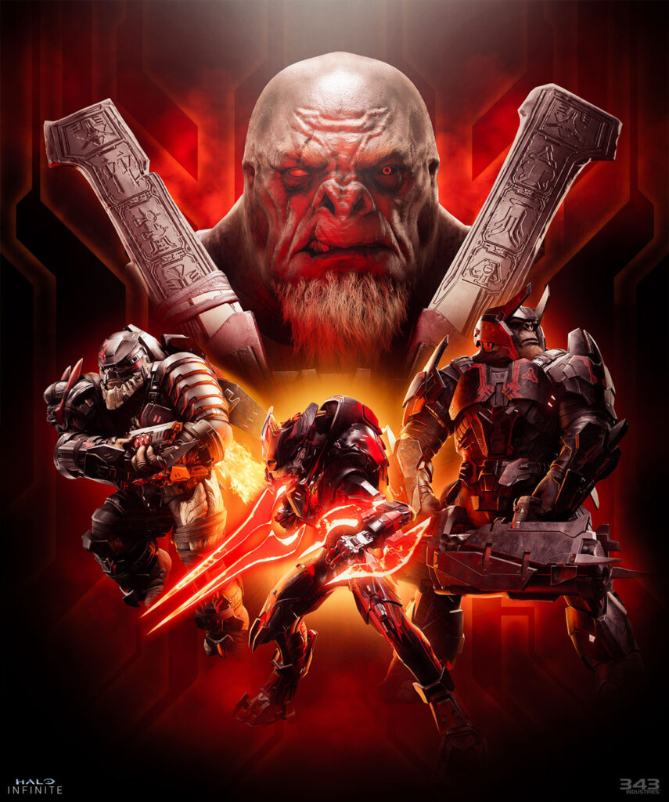
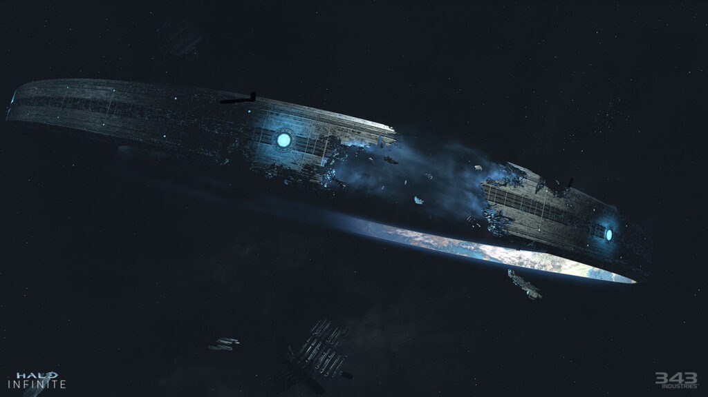
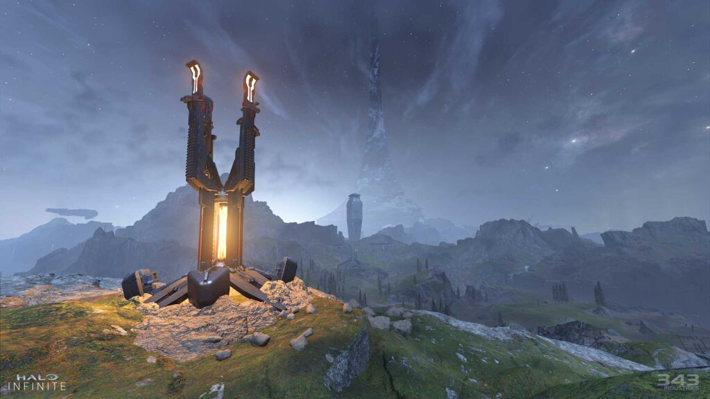
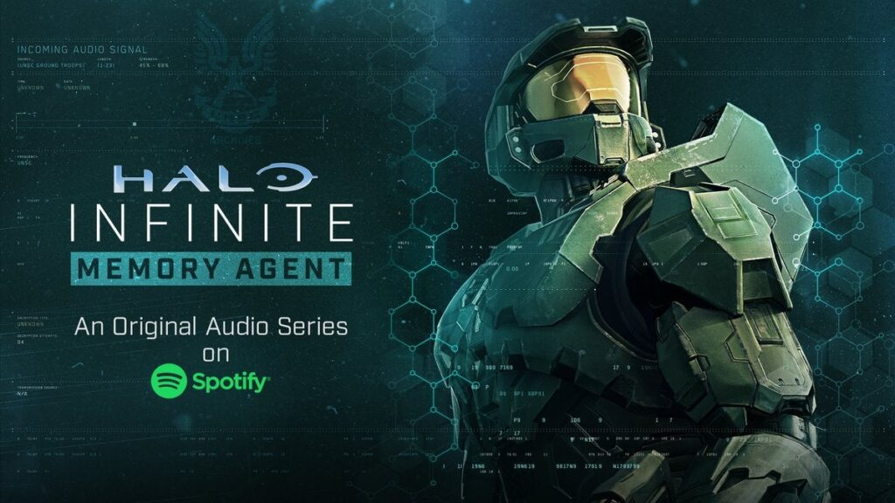
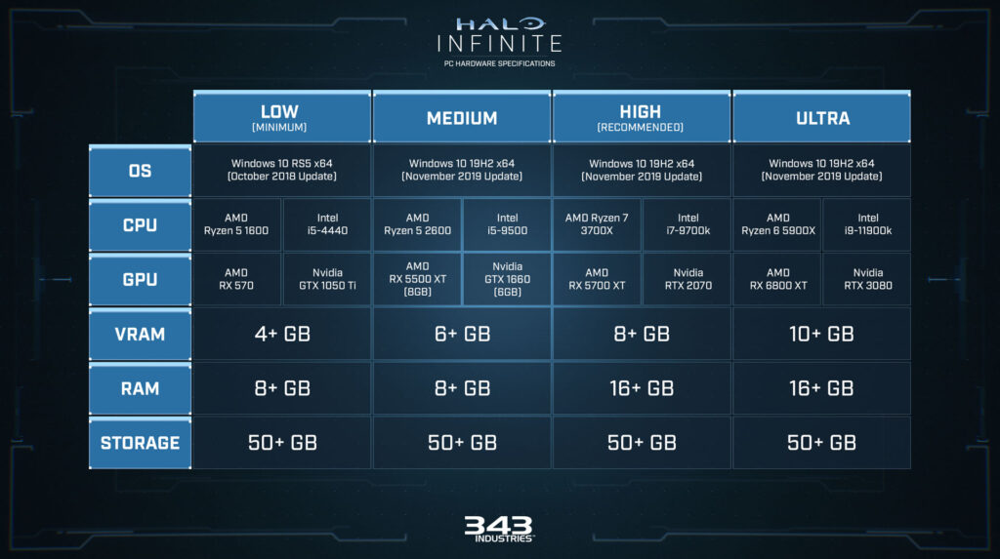
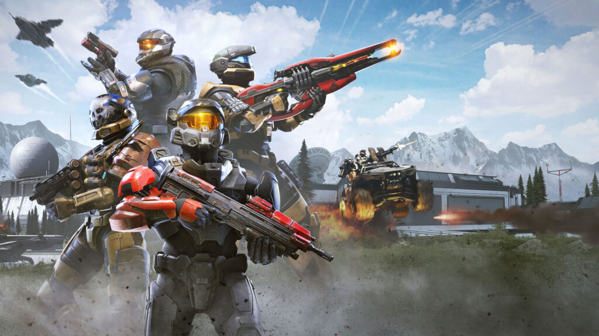

WELCOME TO HALO INFINITE

Six years, six long years... you've waited, you've wondered, and now the time has come.
Halo Infinite releases today!
Before we dive into the details of this momentous day, let's throw it over to Bonnie Ross and Joseph Staten who have a few words they want to share with our studio and community.
Halo is about Heroism, Wonder, Hope, and Community. As we release Halo Infinite and prepare to step into the heroic boots of Master Chief, I want to reflect on a different kind of hero.
Every game has a story, a journey, and a team that goes on that journey together. Our journey was a bit longer and more circuitous than intended, but the 343 team delivered an exceptional experience that directly reflects their passion for Halo - and I couldn't be more proud of what they've achieved.
With Halo Infinite we ventured into new territories with PC and free-to-play. We had a vision of creating the most expansive, epic sci-fi campaign to date, one that would give players more agency to experience Halo the way they want to. Primary to all those goals was to craft a “spiritual reboot,” in order to pay homage to what is core and essential to Halo while still evolving for a new generation. Thank you to the fans who pushed us, gave constructive feedback, and kept us true to the spirt of Halo throughout this journey.
Thank you to the 343 team who raised concerns, saying we weren't ready for 2020 and then spent the last year polishing and refining what I think is the best feeling Halo game ever. You are the heroes - you overcame adversity to deliver something truly special in Halo Infinite and what an honor it is to serve alongside you. I can't wait to see what the heroes of 343 and our community accomplish together as we begin the next era of Halo.
Today, all of us on the Halo Infinite team are overjoyed to welcome you into the expansive and mysterious world of Zeta Halo. If this is your first time stepping into the boots of Spartan-117, Master Chief, let me tell you: you're in for a treat. If you've been with us for previous Halo campaigns, we hope that this one is your favorite adventure yet.
We also recognize that this game is launching at an incredibly tough time. The COVID-19 pandemic has profoundly disrupted families and friendships. It has radically altered the way we work and collaborate as well as how we interact with each other on a fundamental human level. And honestly, some days, it's been hard to see the light at the end of the tunnel.
While Halo has always been about combat - about stepping into the armor of a skillful sci-fi super-soldier with a powerful arsenal of weapons, vehicles, and abilities - Halo has also been filled with bright colors and epic vistas, with soaring music and humorous characters. And Halo has always celebrated heroism and hope.
Our sincerest wish is that this Master Chief story uplifts you. That it makes you smile and cheer. That it brings you closer to loved ones through the pure and simple joy of play. More than anything else, we hope Halo Infinite's campaign makes you feel like a hero, who might be battered and bruised, but who always finds the courage to rise and fight and win.
Because that's what it means to become Master Chief. And now, once again, his story is your story too.
When all hope is lost and humanity's fate hangs in the balance, Master Chief is ready to confront the most ruthless foe he's ever faced. Begin anew and step inside the armor of humanity's greatest hero to experience an epic adventure and finally explore the scale of the Halo ring itself.
Jump in and play Halo's most expansive campaign experience today on the Xbox One family of devices, Xbox Series S/X, Windows PC, and Steam!
Many of you have already jumped into the Beta of our Multiplayer experience, which launched last month on November 15th in celebration of Halo's twentieth anniversary. Today, we look to the future of the franchise as Halo Infinite's Campaign drops out of slipspace.
Our Campaign Overview previously gave some glimpses at what you'll be doing when you become the Master Chief, stepping into his Mjolnir-armored boots, and make landfall on the mysterious Zeta Halo to lead the fight against the Banished. Today we're going to dive a little deeper into some of the key features of the Campaign experience.
WELCOME TO ZETA HALO
Zeta Halo is the biggest campaign space ever created for a Halo game. Players will be given more choice than ever before to interact with this world, the sandbox, friends and foes (both returning and new), and more. While there is a 'golden path' that will lead you down the more traditional narrative road of the Master Chief's story, the open world is a key part of what enables players to tell their own tales in the game.
Across Zeta Halo, you'll find Forward Operating Bases (or 'FOBs') which you'll have to reclaim from the occupying Banished forces. Once liberated, FOBs can be used to call in weapons and vehicles as you build up Valor points and establish a foothold across the many islands spanning the sundered area of the ring.
Valor points accrue as you complete various activities in the open world. For example, you might come across a Banished tower where a Grunt Propaganda Officer aims to demoralize the surviving UNSC forces. These towers represent a smaller reward pool as you will come across many of them in your travels, each rewarding Valor points for their destruction (along with evolving dialogue as you get closer to putting that Unggoy out of a job). Larger-scale activities, like Base Assaults, reward more Valor points that will ultimately enable you to call in more powerful weapons and vehicles, as well as stronger Marines.
“Base Assaults?” you ask? Across Zeta Halo, the Banished have set up fortifications that are just begging to be shut down. These industrial spaces are full of scrapped gear from the UNSC's devastating defeat six months ago and are in the process of being consumed by the Banished's war machine. Within these Bases are Marine prisoners to free, who will take up arms against their captors and follow you - the symbol of their renewed hope - into battle.
Bases are also one of the (many) places where Audio Logs can be found which tell a series of stories from a variety of perspectives, filling in the bigger picture of what has happened on Zeta Halo regarding both the present conflict and the ancient past.
You'll also find Spartan Cores, which let you upgrade your Equipment. Yes, indeed, in the campaign you can upgrade your Equipment with new attributes and abilities. For example, the Grappleshot can be augmented with an electrical effect which stuns certain enemies when used on them. As you progress through the core campaign missions you will add the Drop Wall, Thruster, and Threat Sensor to your arsenal, which all have their own unique upgrades. Your energy shields can also be upgraded to become stronger, so keep an eye out for those Spartan Cores! Of course, the most daring Spartans may choose to forego these altogether on a Legendary run. Godspeed.
In the spaces between, you'll find yourself pulled towards various points of interest. High Value Targets ('HVTs') offer uniquely curated 'boss' encounters which reward special weapon variants, and players who are eager to learn more about the mysterious backstory of this ring will definitely find themselves rewarded with things they come across in the open world...
Oh, and if you miss anything, you don't have to worry about starting from scratch in a new playthrough. After the credits have rolled, you will be able to continue exploring the open world.
We don't want to spoil all the surprises, this is just a taste of what awaits you - a harbinger of things to come - when you begin your great journey on Zeta Halo.
BUT WAIT, THERE'S MORE...
The sights of Zeta Halo are one thing, but how about the sounds? The iconic image of that great glittering band hanging in space goes hand-in-hand with a monk chant that sets a fire in your heart with the promise of an ancient, epic, mysterious adventure. And, well, you know our motto on that score: we deliver!
You can purchase the Halo Infinite soundtrack today on all major music platforms, separated into its Campaign (Gareth Coker, Curtis Schweitzer, Joel Corelitz) and Multiplayer (Alex Bhore and Eternal Time & Space) suites.
CAMPAIGN SOUNDTRACK: Spotify, Apple Music
MULTIPLAYER SOUNDTRACK: Spotify, Apple Music
Oh, and another thing...
There's no better way to pass the time while Halo Infinite installs than tuning into the Spotify-exclusive podcast drama - Halo Infinite: Memory Agent.
Franchise newcomers and seasoned series veterans alike will find a lot to love in this exploration of who the Master Chief is from a very unique point of view.
A lone secret agent from the Office of Naval Intelligence is sent on a mission to relay critical intel to the Master Chief. There's just one catch - every seven hours, her memory resets. Now she must make a perilous journey through closely monitored space, desperate to learn whatever she can about her own past as well as that of the Master Chief. Through the help of an AI companion and battlefield reports of others who have encountered the legendary hero, she pieces together just how important her task may be.
PC/CONSOLE EXPERIENCE
Of course, it's not just the Master Chief's equipment that's key to the Halo Infinite experience, but your own as well.
Halo Infinite is available across the entire suite of Xbox consoles, from the original Xbox One all the way up to Xbox Series S/X. For the first time, players can enjoy a fully native experience on PC with stunning 4K graphics and world-class cross-platform play, along with Cross-Save across all supported devices.
Xbox Series X and supported PCs deliver enhanced features, such as providing up to 120FPS, 4K Ultra HD, and significantly reduced load times, ushering in the next generation of gaming with a seamless gameplay experience.
On PC, Halo Infinite supports advanced graphics settings, ultrawide/super ultrawide support, and triple-key binds, to features like dynamic scaling and variable framerates. With the most extensive suite of customization options, Halo Infinite is the best Halo experience on PC to date.
PC RECOMMENDED SPECS
For the optimal PC experience please ensure your machine at least meets the minimum requirements noted above.
For more insights into the work 343 Industries has done to deliver a native, best-in-class PC experience, check out our PC Overview.
MULTIPLAYER
Halo's celebrated multiplayer returns, reimagined and free to play! Seasonal updates evolve the experience over time with unique events, new modes and maps, and community-focused content.
The Halo Infinite Multiplayer Beta launched on November 15th last month, Halo's twentieth anniversary and we have already gained a plethora of valuable feedback from our community that will continue to drive the evolution of the game in the weeks, months, and years to come.
With the full launch comes a bunch of new rewards that players can earn for Multiplayer within the Campaign. Strewn around Zeta Halo are Spartan Armor Lockers which award Multiplayer Cosmetics for your Spartan.